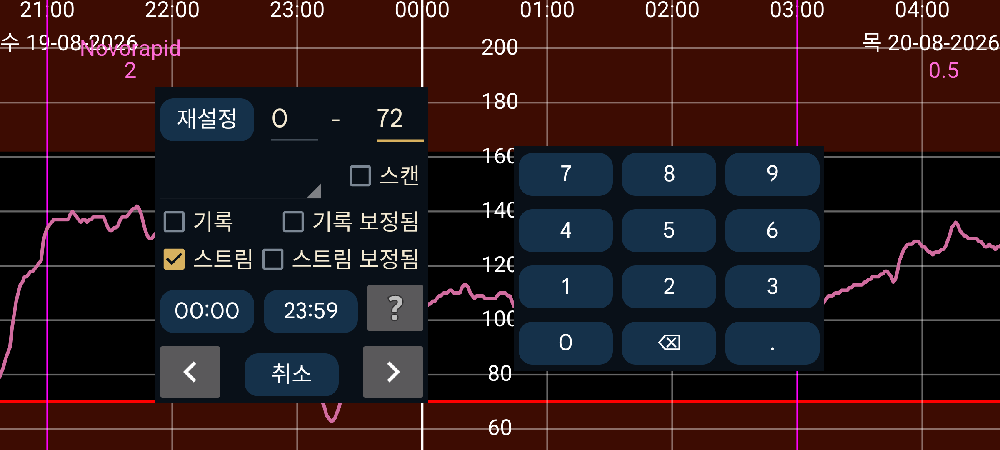

ar be de es fr hi it ja ko nl pl pt ru tr uk uz zh en
검색을 사용해 혈당값과 입력한 숫자를 찾을 수 있습니다.
주어진 두 숫자 사이의 값을 검색합니다. 예: 10–999는 10에서 999 사이의 값을 찾습니다.
혈당값은 스캔, 기록, 스트림으로 나뉩니다.
스캔: 스캔 직후 표시된 값을 검색합니다. 원시 스캔 값을 찾습니다.
기록: 원시 기록 값을 검색합니다. 기록 값은 센서에 주기적으로 저장되어 이 앱으로 전달되는 측정값입니다. FreeStyle Libre 2는 15분마다 값을 저장하고 NFC로 이 앱에 전달하며, FreeStyle Libre 3는 5분마다 값을 저장하고 Bluetooth로 전달합니다.
보정된 기록: 보정된 기록 값을 검색합니다.
스트림: 원시 스트림 값을 검색합니다(FreeStyle Libre 2 센서가 Bluetooth로 이 앱에 보내는 1분 간격 측정값).
보정된 스트림: 보정된 스트림 값을 검색합니다.
인슐린, 음식 또는 활동 데이터를 입력했다면 스피너에서 해당 레이블을 선택하고 관심 있는 숫자 범위를 지정해 검색할 수 있습니다. 예: 자전거 50~100.
관심 있는 하루 중 시간대 도 지정할 수 있습니다. 예를 들어 밤 22:00부터 아침 07:00 사이의 저혈당을 찾으려면 첫 번째 시간 표시(처음에는 00:00)를 22:00으로 바꾸고 두 번째 시간 표시를 07:00으로 바꿉니다. 또한 스트림 및/또는 기록을 선택하고 값 범위를 0~3.9 mmol/L(70 mg/dL)로 지정해야 합니다.
화살표 를 누르면 해당 방향으로 검색을 시작합니다.
재설정 은 모든 검색 값을 처음 상태로 되돌립니다.
설정 의 입력값 레이블 에서 어느 레이블(예: 탄수)이 식사와 연결되는지 선택할 수 있습니다. 이 레이블을 “새 입력값” 에서 선택하면 “식사” 버튼이 나타납니다. 이 버튼을 누르면 재료로 식사를 입력할 수 있습니다. 여기 검색 화면의 스피너에서 같은 레이블을 선택하면 화면 위쪽에 검색할 재료와 선택적으로 그 재료의 최소량을 지정하는 상자가 나타납니다.